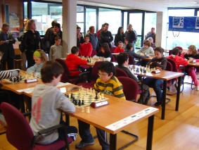
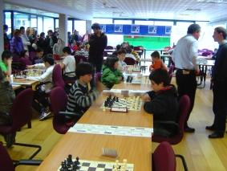

Club de Ajedrez Agustín de Leiza |
| » inicio » socios del club » cto. por equipos » últimos torneos » enlaces |
Finales de los campeonatos individuales alevines e infantiles 200925-04-08Se han jugado las finales de los campeonatos individuales en categoría alevín e infantil con presencia de dos de nuestros ajedrecistas, Urtzi y Rubén, Urtzi en categoría infantil y Rubén en categoría alevín. El torneo se ha disputado en la sede del Gros xake taldea en el polideportivo Manteo y ha reunido a un buen número personas entre jugadores, monitores y padres y ha sido una fiesta del ajedrez, que es de lo que se trata. Los dos torneos se han disputado a 6 rondas con un ritmo de 25 jugadas por jugador y partida, tiempo más que de sobra para estos jugadores. Jugando 4 rondas por la mañana y 2 rondas por la tarde. En el torneo alevín (nacidos en 1997 y 1998) han participado 28 chavales de toda Guipúzcoa, Rubén se ha clasificado decimocuarto con la mitad de los puntos, 3 de 6, quizás se podría esperar más de él ya que él es del 97 y por tanto el año que viene pasa a categoría infantil. Resumen en pdf. 
En el torneo infantil (nacidos en 1995 y 1996) han participado
solamente 15 jugadores, Urtzi se ha clasificado decimosegundo con
sólamente 2 puntos, resultado muy discreto para su potencial,
pero un día malo lo tiene cualquiera ya que Urtzi nos demuestra
sábado tras sábado que va mejorando, cuando aprenda a
tranquilizar esos nervios conseguirá muchos más puntos. Resumen
en pdf.Rubén jugando el la 5ª ronda. 
Urtzi jugando en la 5ª ronda. |